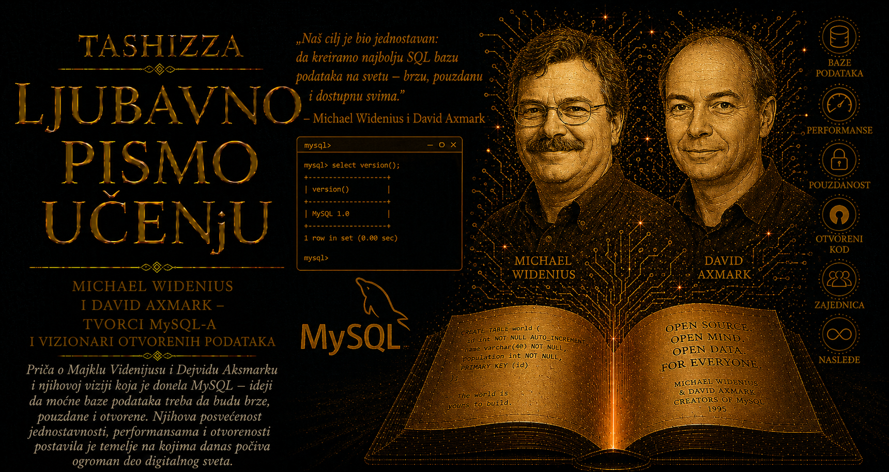

Ljubavno pismo učenju

Imena velikih računarskih sistema često zvuče kao tehničke skraćenice ili pažljivo oblikovani trgovački znakovi. U imenima MySQL i MariaDB, međutim, sačuvana je porodična bliskost njihovog tvorca Majkla „Montija” Videnijusa. MySQL je povezan sa imenom njegove starije kćeri My, dok je MariaDB dobio ime po kćeri Mariji. I njegov sin Maks ostavio je trag u nazivima projekata. Porodična imena tako su ušla u infrastrukturu koja čuva članke, porudžbine, korisničke naloge i bezbrojne druge tragove digitalnog života.
Ulf Majkl Videnijus rođen je 3. marta 1962. godine u Helsinkiju i pripada finsko-švedskom kulturnom prostoru. Njegov profesionalni život kasnije će povezati Finsku i Švedsku, a zatim ljude iz čitavog sveta, okupljene oko zajedničkog koda. Studije na Helsinškom tehnološkom univerzitetu nije završio, pa je rano izabrao praktičan rad. Takva odluka ne treba da postane romantična poruka o bezvrednosti formalnog obrazovanja; ona govori o čoveku koji je u određenom trenutku pronašao sopstveni put učenja kroz neposredne tehničke probleme.
Početkom osamdesetih računari su raspolagali mnogo skromnijim resursima nego današnje mašine. Memorija je bila dragocena, diskovi spori, a pogrešno izabrana struktura podataka odmah je ugrožavala rad sistema. U takvom okruženju Videnijus je stekao gotovo telesni osećaj za cenu svake operacije. Njegova kasnija usredsređenost na performanse proistekla je iz godina u kojima se brzina nije merila radi prestiža, nego je određivala da li se stvarni posao uopšte može završiti.
Godine 1985. sa Alanom Larsonom osnovao je TCX DataKonsult, gde je razvijao sisteme za obradu podataka i poslovno izveštavanje. Među njegovim alatima nalazio se UNIREG, jedan od neposrednih prethodnika MySQL-a. Videnijus nije započeo od zamišljanja savršene baze koja će osvojiti svet. Potreban mu je bio brz i pouzdan sistem za poslove koje je njegova kompanija već obavljala. Ta praktična osnova ostala je trajna crta njegovog rada: apstrakcija dobija vrednost tek kada izdrži susret sa stvarnim podacima, ograničenjima i korisnicima.
U stvaranju MySQL-a sarađivao je sa Dejvidom Aksmarkom i Alanom Larsonom. Videnijus je bio duboko uronjen u tehničko jezgro, optimizator, skladišne mehanizme i ponašanje upita. Saradnici su pomagali da proizvod dobije licencu, poslovni oblik i zajednicu. Njihove uloge podsećaju da čak i kada jedan čovek napiše srce sistema, veliki tehnološki poduhvat zahteva ljude koji umeju da ga objasne, distribuiraju, finansiraju i predaju drugima.
Videnijus je među saradnicima stekao ugled programera sposobnog da problem prati kroz slojeve baze sve do njegovog stvarnog uzroka. Pažljivo je proučavao izveštaje o greškama i rezultate testova, tražeći slučajeve u kojima sistem radi sporije ili nepouzdanije nego što bi trebalo. Takav rad zahteva strpljenje, sumnju prema lakim objašnjenjima i spremnost da se danima razmatra ponašanje koje korisnik vidi tokom nekoliko sekundi. Njegov autoritet poticao je iz dubine razumevanja koda, mnogo više nego iz poslovne titule.
U javnim nastupima umeo je da bude neposredan i tvrdoglav, naročito kada je smatrao da su tehnički smer ili otvorenost projekta ugroženi. Takva narav bila je dragocena kada je trebalo odbraniti rešenje zasnovano na iskustvu, ali je u velikim organizacijama stvarala sukobe. Videnijus je poslovne odluke posmatrao kroz njihove posledice po programere, ritam izdanja i dostupnost koda, pa se teško mirio sa procedurama koje su njegov neposredni uticaj ograničavale.
Prodaja MySQL AB-a Sun Microsystemsu 2008. godine donela mu je veliko materijalno bogatstvo, ali nije prekinula njegovu vezu sa bazom. Kada je Oracle krenuo u preuzimanje Suna, Videnijus je javno izrazio bojazan za budućnost MySQL-a. Njegov položaj sadržao je protivurečnost, jer je i sam učestvovao u odluci kojom je kompanija prethodno prodata. Upravo ta protivurečnost čini priču ljudskom: čovek donese odluku verujući jednom ishodu, okolnosti se promene, a on zatim pokušava da sačuva ono što smatra najvrednijim.
Napustio je Sun i pokrenuo MariaDB kao slobodnu granu MySQL-a, okupivši deo iskusnih programera. Novo ime ponovo je došlo iz porodice, dok je sam projekat izražavao drugačiju vrstu odgovornosti. MySQL je nastao radi rešavanja praktičnog problema; MariaDB je nastao radi očuvanja mogućnosti da se kod razvija mimo vlasnika kojem njegov tvorac više nije potpuno verovao. Račvanje mu je omogućilo da nastavi rad na poznatom sistemu, ali pod novim imenom i sa zajednicom kojoj je trebalo iznova izgraditi poverenje.
Videnijus je tako postao čovek koji je račvao sopstveno životno delo. To iskustvo pokazuje koliko otvoreni kod menja prirodu vlasništva. Kompanija može posedovati trgovačko ime i zapošljavati vodeće programere, ali licenca može ostaviti drugima pravo da postojeći kod ponesu u novom smeru. Ipak, održiva grana zahteva mnogo više od pravne mogućnosti: potrebno je sačuvati znanje ljudi koji razumeju stare odluke, skrivene veze i greške koje dokumentacija nikada nije potpuno zabeležila.
MariaDB Foundation osnovana je kako bi podržala razvoj, infrastrukturu i otvorenost projekta, a Videnijus je ostao jedan od njegovih ključnih tehničkih autoriteta. Odnos fondacije, zajednice i komercijalnih kompanija nastavio je da donosi napetosti poznate iz istorije MySQL-a. Otvoreni softver mora da finansira stručan rad, dok zajednica mora da sačuva dovoljno nezavisnosti da tržišne odluke jednog vlasnika ne odrede čitavu budućnost tehnologije. Ta ravnoteža ostaje posao koji se svakodnevno obnavlja.
Videnijusov odnos prema kodu može se opisati kao starateljstvo. Decenijama je posmatrao bazu kao živi sistem koji treba meriti, popravljati i prilagođavati. Takva vezanost stvarala je izuzetnu tehničku istrajnost i spremnost da se sloboda projekta brani, ali je donosila i teško prihvatanje odluka nad kojima više nema poslednju reč. Tvorac mora biti dovoljno vezan za delo da ga pažljivo izgradi, a istovremeno dovoljno velikodušan da dozvoli drugim ljudima da ga menjaju i nose dalje.
Čitave generacije programera prve SQL naredbe napisale su upravo u MySQL-u. Za njih Videnijus nije prvenstveno bio učesnik velikih korporativnih prodaja i licencnih rasprava. Bio je čovek čiji im je rad omogućio da naprave tabelu knjiga, korisnika, članaka ili porudžbina i prvi put vide kako aplikacija stiče pamćenje. Iz tog skromnog iskustva mnogi su nastavili prema velikim sistemima, administraciji baza i razvoju složenih digitalnih usluga.
Porodična imena njegovih projekata zato nose dublje značenje. Podsećaju da iza apstraktnih tabela, indeksa i upita stoje nečije vreme, odnosi, nade, ponos i strahovi. Majkl Videnijus je stvorio sisteme koje danas razvijaju hiljade ljudi i čiju budućnost nijedan pojedinac više ne može potpuno određivati. U njihovom jezgru ipak ostaje njegov način mišljenja: rešiti stvaran problem, pažljivo meriti rezultat, otvoriti alat drugima i sačuvati put kojim ideja može nastaviti da živi kada se promeni organizacija koja je trenutno čuva.